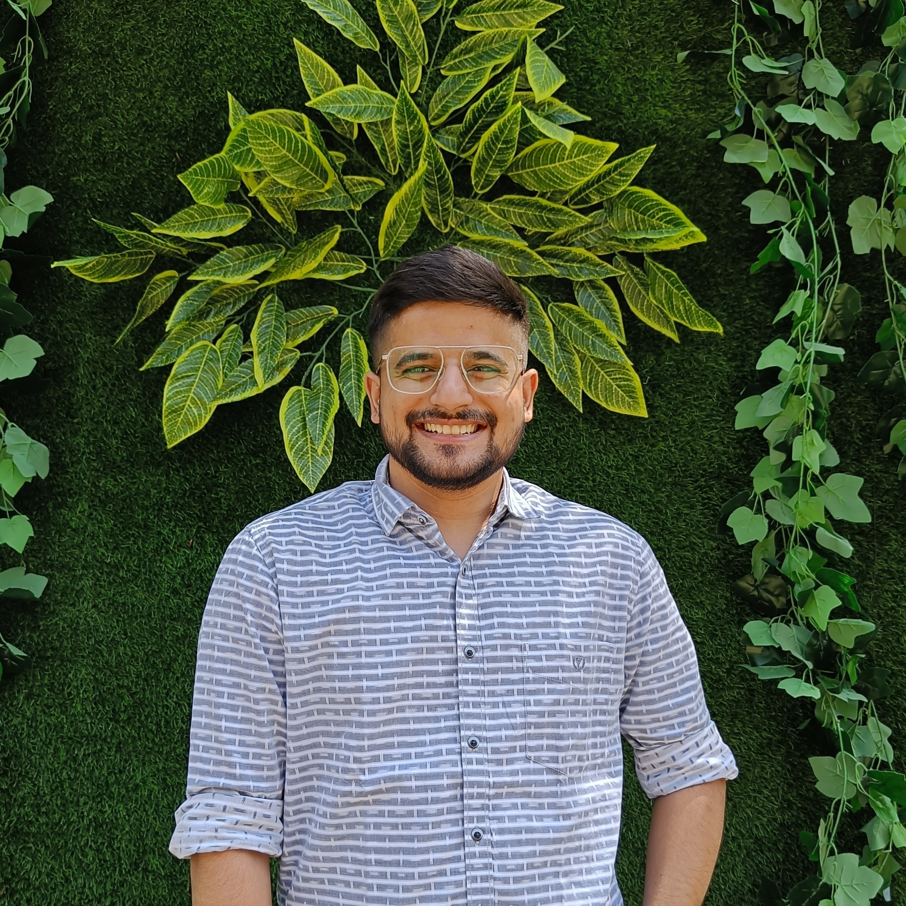

TUSHAR

Education
- Bachelor of Technology in Computer Science and Engineering
Parul University, Vadodara
Experience
- Community Manager | Reskilll
- Leveraged prior community experience to organize and lead tech events.
- Held a leadership role overseeing the Azure Developer Community PAN India.
- Managed the development of the Azure Developer Community website and deepened expertise in Azure Cloud services.
- Flutter Developer Intern | Anglara Digital Solutions
- Designed firmware and crafted user-friendly UI/UX using Figma for mobile apps.
- Developed apps from the ground up, with a strong focus on front-end development.
- Gained proficiency in Flutter and Dart, starting from the fundamentals.
Personal Projects
- aVision(Machine learning based Image captioning)
An Android app with integrated image captioning and real-time face recognition functionalities.
- Utilized TensorFlow Lite to seamlessly integrate these advanced technologies into the Android app.
- The project showcases the ability to fuse deep learning capabilities with mobile platforms for enhanced user experiences.
- Technology Used: Flutter, Dart, OpenCV, Keras, Python.
- Fingerprint Authenticated Secured Note App (Flutter)
A secure note-taking android app for students, featuring biometric authentication and a dark theme for online classes.
- Spearheaded app development, taking charge of designing login and splash screens.
- Acquired proficiency in integrating Flutter with biometric authentication models and implementing dark themes.
- Technology Used: Flutter, Dart, Biometric Authentication Models.
Technical Skills
- Languages: HTML, CSS, C/C++, Dart, Java
- Frameworks: Flutter
- Miscellaneous: Linux, Windows,VS Code, Android Studio, Git & Github, MySQL, OOP, Google Cloud Platform,
Microsoft Office, Figma, Canvn, Debugging, Troubleshooting, App-Development, Web technologies
- Subject Knowledge: Data Structures and Algorithms, Object-Oriented Programming, Computer Networks,
Cryptography
AWARDS
- Got selected as Google Crowdsource Influencer (July-2020) in which I contributed to an open-source event organized
by Google. Even represented Google Crowdsource India in their annual summit & called to visit Google RMZ
Infinity Office Bangalore.
- Google DSC Core Member(Sep-2020 – Aug-2021), Being host I managed and participated as an active speaker for
the sessions in college (online as well), upskilled 45+ students in peer-to-peer learning and upskilled them with the
fundamentals of flutter and dart.
- Since 2019 I have been actively participating in Hacktoberfest, a month-long celebration of open-source software
by DigitalOcean which encourages participation in giving back to the open-source community.
- Core team member for Hack This Fall Hackathon, an annual event hosted by the Hack This Fall Community,
responsible for Social Media Coordination and sponsor liaison for 2 seasons.